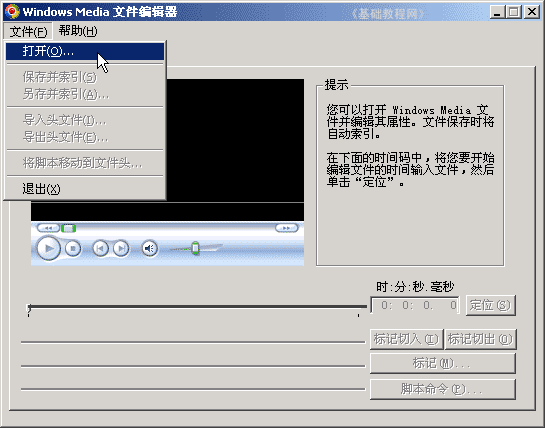
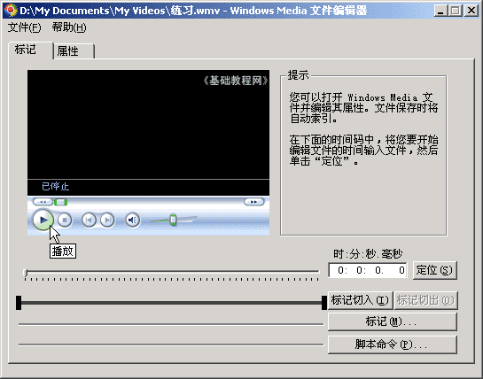
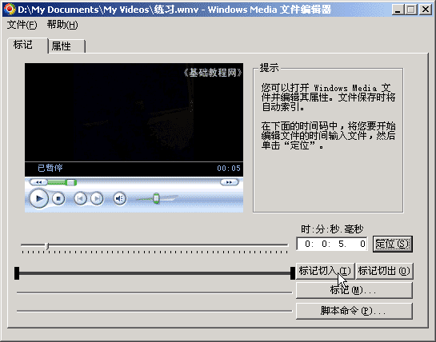
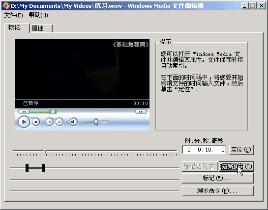
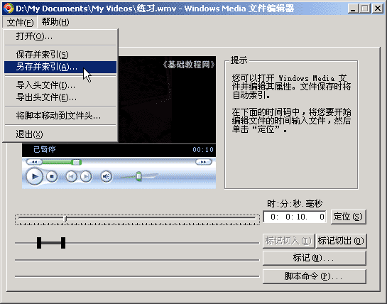

视频编辑 基础入门教程
六、视频剪辑1 返回目录
有时候我们需要视频中的一段，这时候可以用剪辑的方法，取出中间的一段，下面我们来看看使用Windows Media Encoder，来剪切出一段的方法；
1、启动视频软件
1）点“开始－所有程序－Windows Media－实用工具－Windows Media 文件编辑器”，启动编辑工具；
2）进入后出现一个空白窗口，点菜单“文件－打开”命令，在“我的文档－我的视频”文件夹中找到上次保存的“练习”文件，打开它；

3）打开文件后，点中间的“播放”按钮，开始播放视频，大约到5秒的位置后，再点一下，就会暂停下来；

4）点一下左边的“标记切入”按钮，这个位置作为开始点，也可以在上边输入时间后，点“定位”精确到5秒的位置；

5）然后点“播放”按钮，继续播放，大约到10秒的时候，再点一下，暂停下来，
点右边的“标记切出”按钮，作为结束点，也可以用上面的输入时间，精确定位；

6）这时候标尺上就有一段粗黑的线段，这是剪切出来的一段，
点菜单“文件－另存并索引..”，以“练习a”为文件名，保存文件到我的视频文件夹里，由于是另存，原来的文件还在；

本节学习了用Windows Media Encoder录制视频文件的基本方法，如果你成功地完成了练习，请继续学习下一课内容；
本教程由86团学校TeliuTe制作|著作权所有
基础教程网：http://teliute.org/
美丽的校园……
转载和引用本站内容，请保留版权信息和本站链接。